Introduction
According to OurWorldData.com (2022), excess death is a:
“term used in epidemiology and public health that refers to the number of deaths from all causes during a crisis above and beyond what we would have expected to see under ‘normal’ conditions. In this case, we’re interested in how the number of deaths during the COVID-19 pandemic compares to the deaths we would have expected had the pandemic not occurred — It captures not only the confirmed deaths, but also COVID-19 deaths that were not correctly diagnosed and reported, as well as deaths from other causes that are attributable to the overall crisis conditions.”
It is important to note that countries can vary in the recording/reporting/data collection methods. Independent countries have different rules for causes of death classification, along with undercoverage issues. Nonetheless, measuring excess mortality and drawing comparisons provides a general assessment of a crisis because as it includes all deaths regardless of cause.
Rise in Excess Mortality
Countries such as Canada, America, Britain, several countries in the European Union, and many more have seen a significant increase in excess deaths from 2020-2022 (CDC.gov 2022, StatsCanada 2022, EuroStat 2022, ons.gov.uk 2022, OWD.org 2022, abs.gov 2022, Paglino et al. 2022). As expected, many excess deaths between 2020-2022 are attributed to the COVID-19 pandemic and take a large percentage of mortality. Excess death, excluding COVID-19, have also seen a substantial rise between 2020-2022.
Definitions of what constitutes and is recorded as a COVID-19 death can also vary from country to country. For instance, the CDC defines a COVID-19 death as: “A death certificate that lists COVID-19 disease or SARS-CoV-2 or an equivalent term as an underlying cause of death or a significant condition contributing to death.” Canada’s definition of a COVID-19 death is similar: “A probable or confirmed COVID-19 case whose death resulted from a clinically compatible illness, unless there is a clear alternative cause of death identified.”
Issues arise in the heavy influence co-morbidities have on COVID-19 deaths (De-Giorgio et al., 2021 , StatsCanada 2022, theconversation.com 2020, Edler et al., 2020, UNICEF 2021, StatsCanada 2020). The CDC states: “For the majority of deaths where COVID-19 is reported on the death certificate (approximately 95%), COVID-19 is selected as the underlying cause of death.” In another example, the top epidemiologist in New Brunswick, Mathieu Chalifoux, revealed COVID-19 must be listed as the primary cause of death (CBC 2022 ).
An article by Wang et al. (2022) collected excess mortality in 2020-2021 from 74 countries. They found that Worldwide, there were approximately 5.94 million deaths from the COVID-19 pandemic. The authors estimate that about 17.1-19.6 million people died due to the pandemic altogether, and that: “The global all-age rate of excess mortality due to the COVID-19 pandemic was 120.3 deaths (113.1–129.3) per 100 000 of the population, and excess mortality rate exceeded 300 deaths per 100 000 of the population in 21 countries” (Wang et al., 2022 ). According to the World Health Organization, the global excess mortality was estimated at 14.91 million from January 2020 to December 2021.
Excess Deaths in Canada
Statistics Canada (2022) estimates “47,727 excess deaths in Canada from the end of March 2020 to the beginning of June 2022, 7.4% more deaths than expected without the pandemic. During this period, at least 38,265 deaths were directly attributed to COVID-19.” About 9,400 of those excess deaths were not from COVID-19, and Statistics Canada states these are due to “indirect impacts of the pandemic, such as increased substance use and delayed medical procedures/diagnostics, may explain some excess mortality observed in Canada, including for those under the age of 45.” Unfortunately, that is about as far as Canadian statistics/data go on excess mortality. Compared to other countries, Canada’s statistics on excess mortality is lacking.
In Alberta, Beeson et al. (2022) found that “there was statistically significant increase in all-cause mortality. Although older adults are more likely to die of COVID-19, there was massive increase in non-COVID-19 related mortality among the youth.” COVID-19 accounted for 53.8% of all excess deaths from January 2020 to May 2021 (Beeson et al., 2022). Albertan government data released in June 2022 on leading causes of death in 2021 specified that “ill-defined and unknown causes of mortality” was the leading cause of death in 2021, accounting for 3,362 deaths.
Excess Deaths in America
The CDC highlights that in America (figure 1), excess mortality (including COVID-19) hit a high of 42% in January 2021 but began to decline until July 2021. Then, excess death started to climb from August 2021 to January 2022, where excess deaths hit 39%. Between August 2021-January 2022, excess death (excluding COVID-19) saw a concerning rise as well, from 6.6% (August 2021) to 8.1% (January 2022).
Figure 1
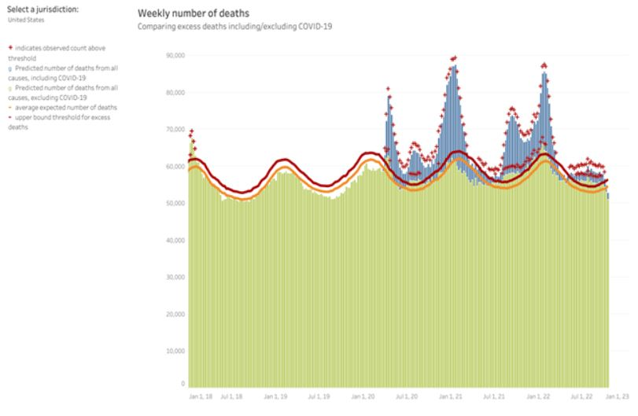According to a report from a July 2022 report on excess deaths from The White House: “the Centers for Disease Control and Prevention (CDC) estimates that excess deaths between the weeks ending March 7, 2020 and March 5, 2022 totaled 1,105,736, 15 percent more than the 958,864 official death toll from COVID-19 over that period.” That leaves approximately 146,872 non-COVID-19 excess deaths from March 2020 to March 2022.
The Society of Actuaries (SOA) released a survey report (from 2020-2022) in September 2022 to gather “U.S. Group Term Life Insurance mortality results during the COVID-19 pandemic, as compared to prior period baseline mortality results” (pg 5). In this survey, SOA shows there was a 33% increase in life insurance claims in 2020-2022 compared to 2017-2019 (SOA, 2022). SOA also found that 80% of mortality claims were due to COVID-19, whereas 20% were from non-COVID-19 deaths (SOA, 2022 pg 15). On pg 23 of the survey, SOA states: “a much greater proportion of excess mortality was identified as COVID for the 45–64 age band, whereas the 0–44 age band has experienced significant non-COVID excess mortality” (Figure 2) (SOA, 2022).
Figure 2
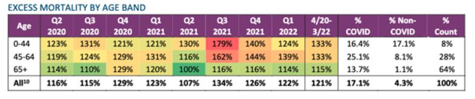Mulligan & Arnott’s (2022) article titled Non-Covid Excess Deaths, 2020-2021 states that:
“Excess deaths from circulatory diseases lead at 32,000 annually. Diseases associated with high blood pressure (hypertension) are especially important contributors to the circulatory total. Coronary heart disease was elevated a lesser percentage than circulatory diseases generally, although it was a major contributor to the additional deaths from circulatory diseases among ages 18-44” (pg 7).
Figure 3: Non-COVID-19 Excess deaths 18+ (Mulligan & Arnott, 2022)
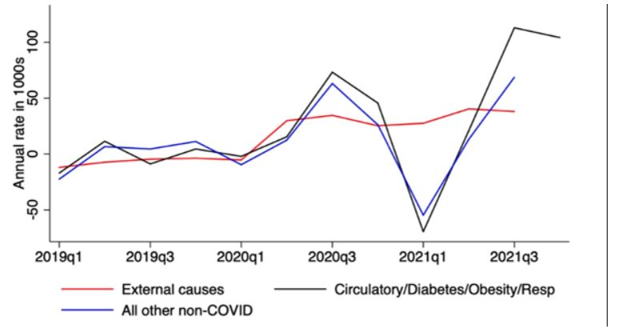
Excess Deaths in the European Union
According to EuroStat (2022), in the European Union, many countries have seen similar spikes in excess mortality (Figure 4 & Figure 5). The EU cites COVID-19 as the cause for most of the excess deaths from 2020-2022. EuroStat (2022) recorded around 58,000 excess deaths in July and 42,000 in August 2022. The European Center for Disease Prevention and Control (ECDC) registered 18,188 COVID-19 deaths in July and 16,447 in August 2022. In July 2022, around 31% of excess deaths were due to COVID-19. In August 2022, about 40% of excess deaths were from COVID-19.
Excess Death in the United Kingdom
England has by far the best data on excess mortality to date. From the United Kingdom Office of National Statistics (2022), the total amount of excess deaths registered in England and Wales between March 2020 and December 2021 was 133,623 (figure 6). Deaths from:
Causes other than COVID-19 were above average in each month between July to December 2021. There were 32,575 excess deaths in this period, and when deaths due to COVID-19 were subtracted from the total number of deaths, the number of deaths remained 16,796 above average.
Symptoms, signs, and ill-defined conditions was the leading cause of excess mortality for females with 1,640 excess deaths (39.6% increase), for males the leading cause of excess mortality was Ischaemic heart diseases, with an excess of 1,908 deaths (11.4% increase). Figure 8 highlights excess deaths by age group and the leading causes.
Figure 6: Excess deaths in EU (ons.gov.uk, 2022 )
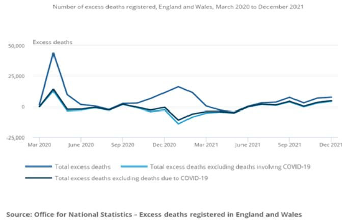Figure 7: Excess Deaths by Age Group (ons.gov.uk, 2022 )
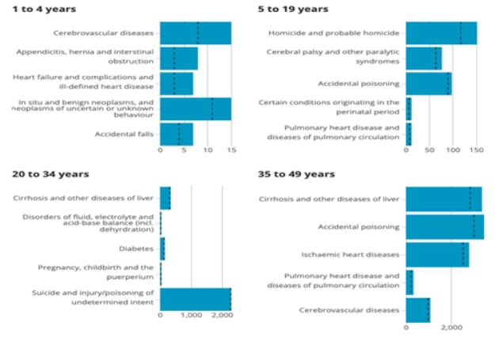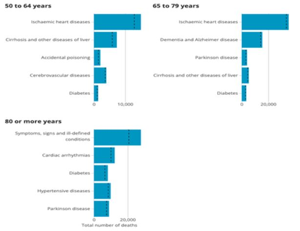
In the week of October 21 2022 (Week 42), 11,938 deaths were registered, a 16.8% increase (ons.gov.uk, 2022 ). 647 deaths were due to COVID-19 (5.8% of all deaths). From May 2022 to October 21 2022, there have been 24,440 non-COVID-19 deaths. According to the (United Kingdom Office for Health Improvement and Disparities (2022) , excess non-COVID-19 deaths have outnumbered COVID-19 deaths each month since June 2022 (figure 7). What is concerning is the substantial rise in death from heart-related diseases (figures 8,9,10,11), diabetes (figure 12), and many more.
Figure 8: Weekly Excess Deaths from Ishaemic Heart Diseases (OHID, 2022 )
Figure 9: Weekly Excess Deaths from Cerebrovascular Diseases (OHID, 2022 )
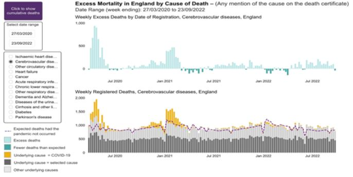Figure 10: Weekly Excess Deaths from Circulatory Diseases (OHID, 2022 )
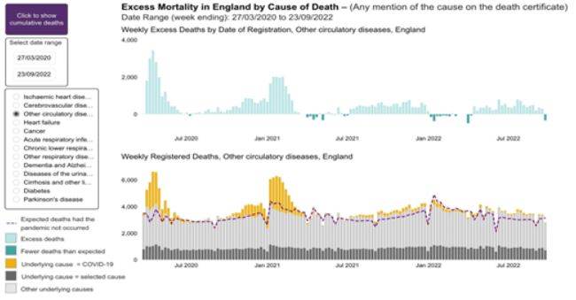Figure 11: Weekly Excess Deaths from Heart Failure (OHID, 2022 )
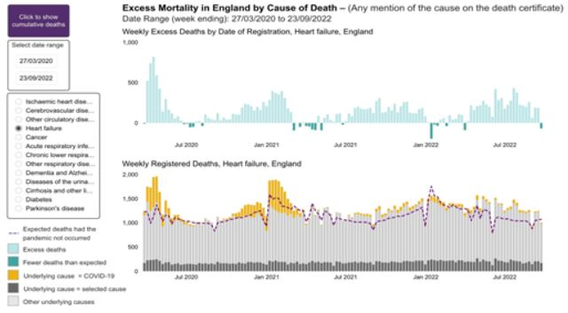Figure 12: Weekly Excess Death from Diabetes (OHID, 2022 )
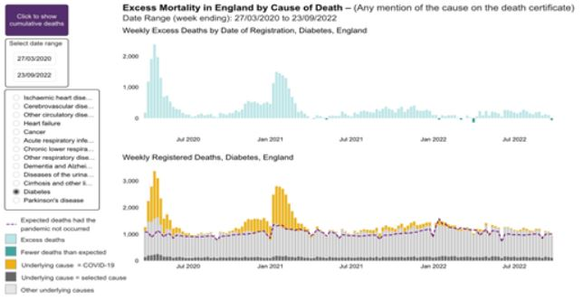
Excess Deaths in Australia
The Australian Bureau of Statistics (2022) states that in the first two months of 2022, there were 4,732 excess deaths. Deaths due to: “dementia, diabetes, ischaemic heart diseases and cerebrovascular diseases also recorded some statistically significant excess mortality in the first two months of 2022. There were 164 people who died from these diseases who were COVID-19 positive at death.” At the peak of observed deaths in the week of January 17 2022, there were 3,413 observed deaths, 2,917 were not due to COVID-19 (figure 13).
Figure 13: Excess deaths in EU (abs.gov, 2022 )
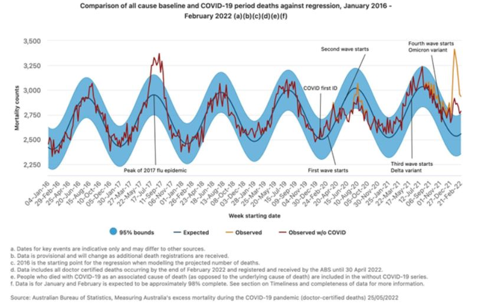
Scotland Neo-Natal Deaths
Unfortunately, in September 2022, the Scottish Government reported a rise in neonatal deaths (deaths occurring within the first month of life). According to the BBC (2022a):
“There were 3.9 infant deaths for every thousand live births in 2021, increasing from 3.1 the previous year. With 47,786 live births registered, Scotland's birth rate was 2% higher than in 2020 - but still the second lowest since records began.”